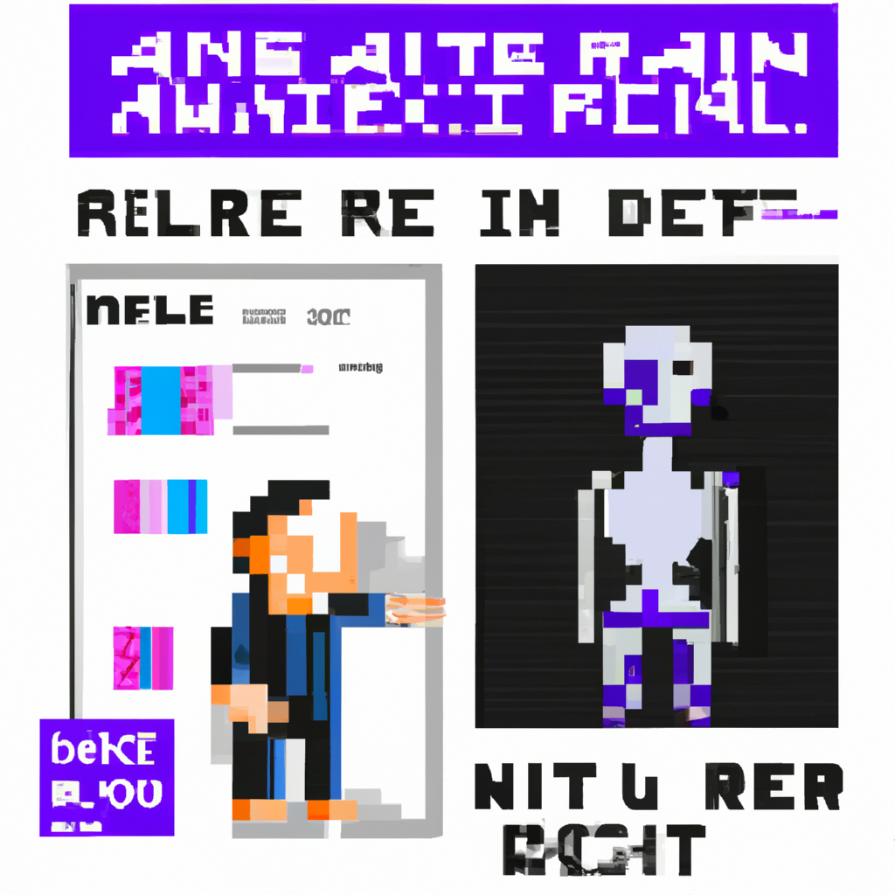

Why AI will never replace the radiologist
Humans are not just machines and AI will never replace the radiologist.
Radiology is a complex field that requires human skills and experience. As technology advances, AI has been seen as a possible replacement for radiologists. However, AI lacks the understanding of human anatomy, context, and intuition that the radiologist has. AI is not capable of understanding the nuances of imaging and interpreting them correctly.
AI can be used as an assistant to radiologists, but it can never replace them. AI can help radiologists to focus on the most important images, identify areas of concern, and flag any potential issues that may arise. AI cannot, however, interpret images and make decisions on its own – it can only offer suggestions and provide additional information.
Additionally, AI cannot take into account the patient’s medical history or specific conditions that may affect the interpretation of the image. AI cannot communicate with the patient in a meaningful way and provide them with the best treatment plan, something that only a radiologist can do.
AI, while it may be a helpful tool, will never replace the radiologist. The radiologist has the experience, knowledge, and understanding to interpret images in the best way possible for the patient. AI may be able to provide some of the same analysis, but it will never be able to replace the radiologist when it comes to patient care.